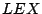
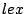

The only way to access the actual characters of a lexical token is by means of the so-called lexical constructor functions. For each lexical sort  a lexical constructor function is automatically derived, the corresponding syntax definition is: ( CHAR* ) -> . The sort CHAR is a predefined sort to access the characters.
Characters can be directly addressed by the representation or via variables which may be of the sorts CHAR, CHAR*, or CHAR+. The latter two represent lists of characters. In the example below[in Figure ]CODE:lcfs the lexical constructor function nat-con is used to remove the leading zeros from a number.
warning.gif Warning: The argument of a lexical constructor may be an arbitrary list of characters and there is no check that they match the lexical definition of the corresponding sort. This means that when writing a specification one should be aware that it is possible to construct illegal lexical entities, for instance, by inserting letters in an integer. In the example below[in Figure ]CODE:illegallcfs via the lexical constructor function nat-con a natural number containing the letter a is constructed.